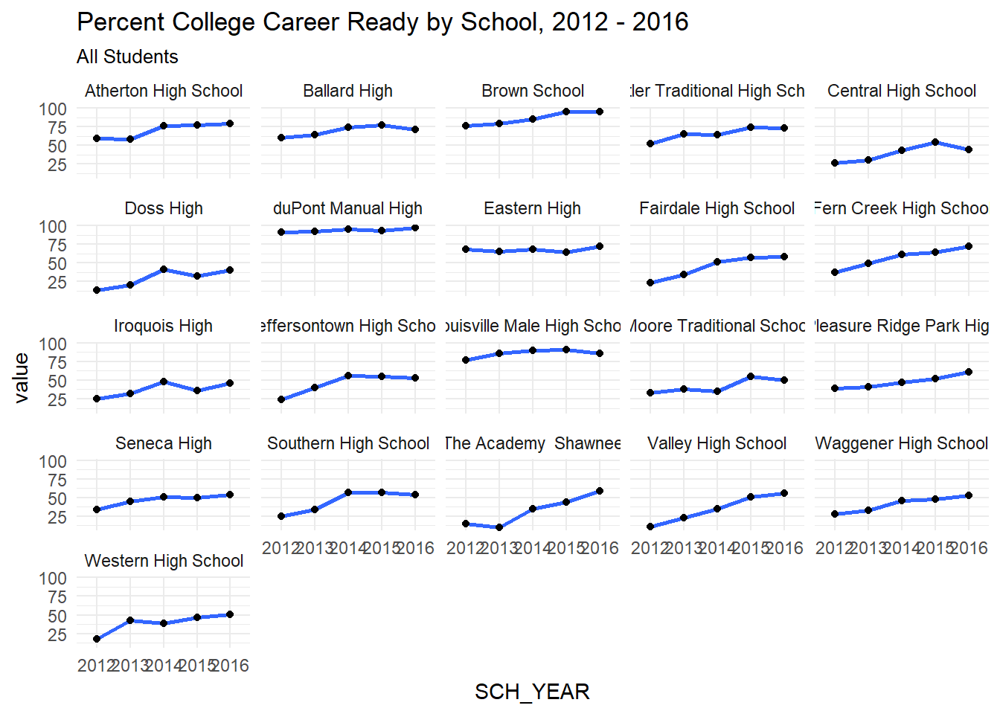
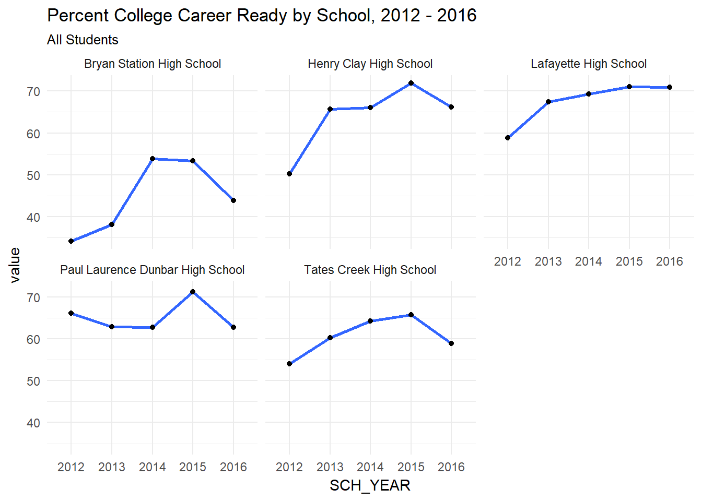

What are we about to do?
- Learn the most important idioms for data munging in R
- Apply them to an open data example
- By the end, I hope you can use these skills to repeat this process with data you find
What Data Are We Using?
- Kentucky Department of Education College and Career Readiness Data
- Easily Found on their website
Step 1: Load Up Tidyverse and Read In Data
library(tidyverse)
ccr_data <- read_csv('./EDA_Munging_data/1516.csv')
glimpse(ccr_data)## Observations: 6,902
## Variables: 25
## $ SCH_YEAR <int> 20152016, 20152016, 20152016, 20152...
## $ CNTYNO <chr> "001", "001", "001", "001", "001", ...
## $ CNTYNAME <chr> "ADAIR", "ADAIR", "ADAIR", "ADAIR",...
## $ DIST_NUMBER <chr> "001", "001", "001", "001", "001", ...
## $ DIST_NAME <chr> "Adair County", "Adair County", "Ad...
## $ SCH_NUMBER <chr> "010", "010", "010", "010", "010", ...
## $ SCH_NAME <chr> "Adair County High School", "Adair ...
## $ SCH_CD <chr> "001010", "001010", "001010", "0010...
## $ SCH_TYPE <chr> "A1", "A1", "A1", "A1", "A1", "A1",...
## $ STATE_SCH_ID <chr> "001001010", "001001010", "00100101...
## $ NCESID <dbl> 2.10003e+11, 2.10003e+11, 2.10003e+...
## $ CATEGORY <chr> "Accountability", "Accountability",...
## $ TEST_TYPE <chr> "CCR", "CCR", "CCR", "CCR", "CCR", ...
## $ DISAGG_ORDER <int> 0, 1, 2, 3, 4, 5, 6, 7, 8, 9, 10, 1...
## $ DISAGG_LABEL <chr> "All Students", "Male", "Female", "...
## $ NBR_GRADUATES_WITH_DIPLOMA <chr> "196", "106", "90", "180", "5*", "8...
## $ COLLEGE_READY <int> 112, 54, 58, 106, NA, NA, NA, NA, N...
## $ CAREER_READY_ACADEMIC <int> 134, 70, 64, 124, NA, NA, NA, NA, N...
## $ CAREER_READY_TECHNICAL <int> 79, 44, 35, 77, NA, NA, NA, NA, NA,...
## $ CAREER_READY_TOTAL <int> 72, 40, 32, 72, NA, NA, NA, NA, NA,...
## $ NBR_CCR_REGULAR <int> 131, 65, 66, 125, NA, NA, NA, NA, N...
## $ PCT_CCR_NO_BONUS <dbl> 66.8, 61.3, 73.3, 69.4, NA, NA, NA,...
## $ PCT_CCR_WITH_BONUS <dbl> 80.9, 75.5, 87.2, 84.4, NA, NA, NA,...
## $ COOP <chr> "GRREC", "GRREC", "GRREC", "GRREC",...
## $ COOP_CODE <int> 902, 902, 902, 902, 902, 902, 902, ...- What do we have here?
- Is this data Wide or Narrow? (or both?!?!?!)
- Wide data has columns for each variable
- Narrow data typically has a “variable” column and a “value” column and each variable is repeated multiple times.
- R very much prefers narrow data
- What columns seem important?
- Does this data have multiple columns that represent the same value?
- Are there columns that don’t contain useful information?
- Consider your purpose for looking at the data, what story seems interesting and relevant?
- Is this data Wide or Narrow? (or both?!?!?!)
# Look at data
glimpse(ccr_data)## Observations: 6,902
## Variables: 25
## $ SCH_YEAR <int> 20152016, 20152016, 20152016, 20152...
## $ CNTYNO <chr> "001", "001", "001", "001", "001", ...
## $ CNTYNAME <chr> "ADAIR", "ADAIR", "ADAIR", "ADAIR",...
## $ DIST_NUMBER <chr> "001", "001", "001", "001", "001", ...
## $ DIST_NAME <chr> "Adair County", "Adair County", "Ad...
## $ SCH_NUMBER <chr> "010", "010", "010", "010", "010", ...
## $ SCH_NAME <chr> "Adair County High School", "Adair ...
## $ SCH_CD <chr> "001010", "001010", "001010", "0010...
## $ SCH_TYPE <chr> "A1", "A1", "A1", "A1", "A1", "A1",...
## $ STATE_SCH_ID <chr> "001001010", "001001010", "00100101...
## $ NCESID <dbl> 2.10003e+11, 2.10003e+11, 2.10003e+...
## $ CATEGORY <chr> "Accountability", "Accountability",...
## $ TEST_TYPE <chr> "CCR", "CCR", "CCR", "CCR", "CCR", ...
## $ DISAGG_ORDER <int> 0, 1, 2, 3, 4, 5, 6, 7, 8, 9, 10, 1...
## $ DISAGG_LABEL <chr> "All Students", "Male", "Female", "...
## $ NBR_GRADUATES_WITH_DIPLOMA <chr> "196", "106", "90", "180", "5*", "8...
## $ COLLEGE_READY <int> 112, 54, 58, 106, NA, NA, NA, NA, N...
## $ CAREER_READY_ACADEMIC <int> 134, 70, 64, 124, NA, NA, NA, NA, N...
## $ CAREER_READY_TECHNICAL <int> 79, 44, 35, 77, NA, NA, NA, NA, NA,...
## $ CAREER_READY_TOTAL <int> 72, 40, 32, 72, NA, NA, NA, NA, NA,...
## $ NBR_CCR_REGULAR <int> 131, 65, 66, 125, NA, NA, NA, NA, N...
## $ PCT_CCR_NO_BONUS <dbl> 66.8, 61.3, 73.3, 69.4, NA, NA, NA,...
## $ PCT_CCR_WITH_BONUS <dbl> 80.9, 75.5, 87.2, 84.4, NA, NA, NA,...
## $ COOP <chr> "GRREC", "GRREC", "GRREC", "GRREC",...
## $ COOP_CODE <int> 902, 902, 902, 902, 902, 902, 902, ...# Unique values in each column
map(ccr_data %>% filter(DIST_NAME == 'Jefferson County'), function(i) length(unique(i)))## $SCH_YEAR
## [1] 1
##
## $CNTYNO
## [1] 1
##
## $CNTYNAME
## [1] 1
##
## $DIST_NUMBER
## [1] 1
##
## $DIST_NAME
## [1] 1
##
## $SCH_NUMBER
## [1] 22
##
## $SCH_NAME
## [1] 22
##
## $SCH_CD
## [1] 22
##
## $SCH_TYPE
## [1] 2
##
## $STATE_SCH_ID
## [1] 22
##
## $NCESID
## [1] 22
##
## $CATEGORY
## [1] 1
##
## $TEST_TYPE
## [1] 1
##
## $DISAGG_ORDER
## [1] 17
##
## $DISAGG_LABEL
## [1] 17
##
## $NBR_GRADUATES_WITH_DIPLOMA
## [1] 149
##
## $COLLEGE_READY
## [1] 116
##
## $CAREER_READY_ACADEMIC
## [1] 61
##
## $CAREER_READY_TECHNICAL
## [1] 81
##
## $CAREER_READY_TOTAL
## [1] 48
##
## $NBR_CCR_REGULAR
## [1] 122
##
## $PCT_CCR_NO_BONUS
## [1] 169
##
## $PCT_CCR_WITH_BONUS
## [1] 168
##
## $COOP
## [1] 1
##
## $COOP_CODE
## [1] 1# Don't forget the glossary!
# http://applications.education.ky.gov/SRC/Glossary.aspx
## Looking at the data by county, selecting just the columns we are interested in
ccr_data_s <- ccr_data %>%
filter(DIST_NAME == 'Jefferson County') %>%
select(SCH_YEAR, SCH_NAME, DISAGG_LABEL, NBR_GRADUATES_WITH_DIPLOMA, NBR_CCR_REGULAR, PCT_CCR_NO_BONUS)
glimpse(ccr_data_s)## Observations: 374
## Variables: 6
## $ SCH_YEAR <int> 20152016, 20152016, 20152016, 20152...
## $ SCH_NAME <chr> "Atherton High School", "Atherton H...
## $ DISAGG_LABEL <chr> "All Students", "Male", "Female", "...
## $ NBR_GRADUATES_WITH_DIPLOMA <chr> "264", "114", "150", "175", "59", "...
## $ NBR_CCR_REGULAR <int> 209, 82, 127, 150, 32, 13, NA, NA, ...
## $ PCT_CCR_NO_BONUS <dbl> 79.2, 71.9, 84.7, 85.7, 54.2, 81.3,...WTF JUST HAPPENED
- The first thing we did was to load the
tidyverse. This gives use access to many of the most powerful data analysis packages.dplyris a “grammar of data manipulation” and was written by Hadley Wickham.- Four idioms in
dplyrare the most important:select,filter,mutate, andsummarize
- Four idioms in
- We’ve technically already used both
readrwithread_csvand alsotibble.
filter- a subsetting function. Takes column names and equivilencies as arguments.select- a function for picking columns.selecthas a lot of helper functions, and negative values can be used.
%>%- the pipe. Linux people can guess what this means.- Originally from the
magrittrpackage. I have no idea whatmagrittrwas supposed to do, but it gave use the pipe. - When you see this, the data on the LHS becomes the first argument to the function on the RHS
- Once you get the hang of
%>%, your life will change for the better - A massive amount of R base functions have been rewritten so the data is the first argument.
- Originally from the
- BONUS
mapis frompurrr. It is a unique way to do iteration in R. If we have time, I’ll talk about it at the end.
Okay, So What Now?
- Are there any
typeissues? - Let’s explore our narrow columns to see if there are any inconsistencies.
ccr_data_s %>% glimpse()## Observations: 374
## Variables: 6
## $ SCH_YEAR <int> 20152016, 20152016, 20152016, 20152...
## $ SCH_NAME <chr> "Atherton High School", "Atherton H...
## $ DISAGG_LABEL <chr> "All Students", "Male", "Female", "...
## $ NBR_GRADUATES_WITH_DIPLOMA <chr> "264", "114", "150", "175", "59", "...
## $ NBR_CCR_REGULAR <int> 209, 82, 127, 150, 32, 13, NA, NA, ...
## $ PCT_CCR_NO_BONUS <dbl> 79.2, 71.9, 84.7, 85.7, 54.2, 81.3,...ccr_data_s$SCH_NAME %>% unique() %>% sort()## [1] "---District Total---" "Atherton High School"
## [3] "Ballard High" "Brown School"
## [5] "Butler Traditional High School" "Central High School"
## [7] "Doss High" "duPont Manual High"
## [9] "Eastern High" "Fairdale High School"
## [11] "Fern Creek High School" "Iroquois High"
## [13] "Jeffersontown High School" "Louisville Male High School"
## [15] "Moore Traditional School" "Pleasure Ridge Park High"
## [17] "Seneca High" "Southern High School"
## [19] "The Academy @ Shawnee" "Valley High School"
## [21] "Waggener High School" "Western High School"# Fix up some columns!
library(stringr)
ccr_data_t <- ccr_data_s %>%
mutate(
SCH_NAME = str_replace_all(SCH_NAME, '[[:punct:]]','') %>% trimws(),
SCH_YEAR = 2016,
NBR_GRADUATES_WITH_DIPLOMA = str_replace_all(NBR_GRADUATES_WITH_DIPLOMA, '[[:punct:]]','') %>% as.numeric(),
NBR_CCR_REGULAR = str_replace_all(NBR_CCR_REGULAR, '[[:punct:]]','') %>% as.numeric()
)
glimpse(ccr_data_t)## Observations: 374
## Variables: 6
## $ SCH_YEAR <dbl> 2016, 2016, 2016, 2016, 2016, 2016,...
## $ SCH_NAME <chr> "Atherton High School", "Atherton H...
## $ DISAGG_LABEL <chr> "All Students", "Male", "Female", "...
## $ NBR_GRADUATES_WITH_DIPLOMA <dbl> 264, 114, 150, 175, 59, 16, 9, 1, N...
## $ NBR_CCR_REGULAR <dbl> 209, 82, 127, 150, 32, 13, NA, NA, ...
## $ PCT_CCR_NO_BONUS <dbl> 79.2, 71.9, 84.7, 85.7, 54.2, 81.3,...Mutate and stringr
- Of all the
dplyrfunctions,mutateis my favorite mutatetakes a column, applies a transformation to it, and either saves it back into the old column or creates a new column.- Great for using iterators like the
applyfamily or thepurrr::mapfamily.
- Great for using iterators like the
stringris anothertidyversepackage, but it needs to be loaded separately.- There are a lot of basic string functions built into base R, but they don’t have the data as the first argument, and can’t be used with the
%>%. - It’s PROBABLY a good idea to learn about the base R functions, but IMO, learning
stringris better. - There are other, more powerful string function in
stringrnot available in base R.
- There are a lot of basic string functions built into base R, but they don’t have the data as the first argument, and can’t be used with the
- We also used
as.numeric()which is a casting function. BE CAREFUL with these.- If we hadn’t pulled out the extra punctuation first, it would have cast the non-numeric data to
NA.
- If we hadn’t pulled out the extra punctuation first, it would have cast the non-numeric data to
Narrow It Down
- We’ve still got Wide data. Let’s narrow it up!
ccr_data_n <- ccr_data_t %>%
gather(key = Level, value = value, NBR_GRADUATES_WITH_DIPLOMA,NBR_CCR_REGULAR,PCT_CCR_NO_BONUS)
glimpse(ccr_data_n)## Observations: 1,122
## Variables: 5
## $ SCH_YEAR <dbl> 2016, 2016, 2016, 2016, 2016, 2016, 2016, 2016, 2...
## $ SCH_NAME <chr> "Atherton High School", "Atherton High School", "...
## $ DISAGG_LABEL <chr> "All Students", "Male", "Female", "White (Non-His...
## $ Level <chr> "NBR_GRADUATES_WITH_DIPLOMA", "NBR_GRADUATES_WITH...
## $ value <dbl> 264, 114, 150, 175, 59, 16, 9, 1, NA, 4, NA, 5, 1...Gather, or, the most confusing thing in the world.
- Back in the day, many people used a package named
reshape2- Many people still use it. The best part was
reshape2::melt, which made data narrow.
- Many people still use it. The best part was
tidyr::gatheris, in my mind, a better solution. It’s part of thetidyverseand make things more explicit.gathertakes a key and a value, which are NEW columns that will be created.- Then, you pass it the columns you want to gather and those get placed into the key column
- I told you this was confusing.
- There is a partner to
gather,spread, which takes narrow data and makes it wide.
Next Up, Listen for Tips!
- Kris Stevens gave me this data, and told me that many of the “District Total” figures weren’t correct.
- Let’s fix them up!
ccr_data_n %>%
filter(Level == 'NBR_GRADUATES_WITH_DIPLOMA') %>%
group_by(DISAGG_LABEL) %>%
summarize('NBR_GRADUATES_WITH_DIPLOMA' = sum(value, na.rm = T)) %>%
left_join(
ccr_data_n %>%
filter(Level == 'NBR_CCR_REGULAR') %>%
group_by(DISAGG_LABEL) %>%
summarize('NBR_CCR_REGULAR' = sum(value, na.rm = T))
) %>%
mutate(PCT_CCR_NO_BONUS = round(100 * (NBR_CCR_REGULAR / NBR_GRADUATES_WITH_DIPLOMA ))) %>%
gather(key = Level, value = value, NBR_GRADUATES_WITH_DIPLOMA,NBR_CCR_REGULAR,PCT_CCR_NO_BONUS) %>%
mutate(SCH_YEAR = 2016,
SCH_NAME = 'District Total') %>%
bind_rows(ccr_data_n) %>% View()Woof, that code is ugly. Is there a better way?
aggregate_level <- function(df, col_head){
df %>%
filter(Level == col_head) %>%
group_by(DISAGG_LABEL) %>%
summarize(new_col = sum(value, na.rm = T)) %>%
rename_(.dots = setNames('new_col', eval(col_head)))
}
ccr_tidy <- aggregate_level(ccr_data_n, 'NBR_GRADUATES_WITH_DIPLOMA') %>%
left_join(aggregate_level(ccr_data_n, 'NBR_CCR_REGULAR')) %>%
mutate(PCT_CCR_NO_BONUS = round(100 * (NBR_CCR_REGULAR / NBR_GRADUATES_WITH_DIPLOMA ))) %>%
gather(key = Level, value = value, NBR_GRADUATES_WITH_DIPLOMA,NBR_CCR_REGULAR,PCT_CCR_NO_BONUS) %>%
mutate(SCH_YEAR = 2016,
SCH_NAME = 'District Total') %>%
bind_rows(ccr_data_n)group_by, summarize, joins, binds, NSE, and functional programming
- WHAT A LIST
- If you’ve used SQL, you probably understand
group_by.- When you group a column and then run an aggregation function, it aggregates PER GROUP.
summarizeis one of those aggregation functions.summarizeis kind of like mutate, but instead of creating a new column of the same length as the df, it summarizes the data.- There are places where
summarizeis useful withoutgroup_by, but not many. - The way we used
summarizeabove, we got a number representing the sum ofvalueby eachDISAGG_LABEL.- We could have switched the
group_bytoSCH_NAMEand it would have given us the sum ofvalueby each school.
- We could have switched the
- It’s technically
summarise, but this is America, dammit.
- Joins are also something SQL users will be familiar with.
- Types:
left_join,inner_join,right_join,full_join,semi_join, andanti_join. - All types take two data frames, and typically a
byargument, and sometimes asuffixargument.bytakes a vector that looks likec('lhs' = 'rhs')- If there are column names in common with LHS and RHS, the default suffix is ‘.x’ and ‘.y’, but you can override those.
- We are using
left_join:- “return all rows from x where there are matching values in y, and all columns from x and y. If there are multiple matches between x and y, all combination of the matches are returned.”
- The R documentation for joins is good if you aren’t clear about which of these.
anti_joinandsemi_joinare rare but cool.
- Types:
- Binds are way to bind together data frames. They stack on top of each other.
bind_rowsandbind_colsare thedplyrway to do things.rbindandcbindare base R.- As usualy, the tidyverse way is safer and more powerful.
- Non-standard evaluation
- If you’ve got keen eyes, you’ve noticed that the arguments to the
dplyrfunctions are never strings – they are bare and unquoted. - This form of evaluation is called “standard evaluation”, and it’s not great for programming. (Fine for analysis though).
- “Non-Standard Evaluation” is also present in
dplyr. It’s all the functions with an underscore after them. For examplerename_(rename is another way to doselect)- Probably don’t worry about knowing how to do this, but know it’s there.
- If you’ve got keen eyes, you’ve noticed that the arguments to the
- Functional Programming
- This is the heart of R – building functions you can call later.
- Everything we’ve “called” so far is technically a function. You can build your own!
function(x,y){}would create a function that you could call with two inputs.- Most of the functions I write are anonymous, but not always!
OKAY SO WHAT NEXT
- We’ve been working with one csv’s worth of data so far, but the BoE makes several years available. Let’s combine them!
- To do that, we will put all the code we’ve made so far into a function, and then bind all the data together using that function.
tidy_ccr <- function(df, county){
tidy_df <- df %>%
filter(DIST_NAME == county) %>%
select(SCH_YEAR, SCH_NAME, DISAGG_LABEL, NBR_GRADUATES_WITH_DIPLOMA, NBR_CCR_REGULAR, PCT_CCR_NO_BONUS) %>%
mutate( # First Change
SCH_YEAR = case_when(SCH_YEAR == 20152016 ~ 2016L,
SCH_YEAR == 20142015 ~ 2015L,
SCH_YEAR == 20132014 ~ 2014L,
SCH_YEAR == 20122013 ~ 2013L,
SCH_YEAR == 20112012 ~ 2012L
) %>% ordered(),
SCH_NAME = str_replace_all(SCH_NAME, '[[:punct:]]','') %>% trimws(),
NBR_GRADUATES_WITH_DIPLOMA = str_replace_all(NBR_GRADUATES_WITH_DIPLOMA, '[[:punct:]]','') %>% as.numeric(),
NBR_CCR_REGULAR = str_replace_all(NBR_CCR_REGULAR, '[[:punct:]]','') %>% as.numeric()
) %>%
gather(key = Level, value = value, NBR_GRADUATES_WITH_DIPLOMA,NBR_CCR_REGULAR,PCT_CCR_NO_BONUS)
aggregate_level(tidy_df, 'NBR_GRADUATES_WITH_DIPLOMA') %>%
left_join(aggregate_level(tidy_df, 'NBR_CCR_REGULAR')) %>%
mutate(PCT_CCR_NO_BONUS = round(100 * (NBR_CCR_REGULAR / NBR_GRADUATES_WITH_DIPLOMA ))) %>%
gather(key = Level, value = value, NBR_GRADUATES_WITH_DIPLOMA,NBR_CCR_REGULAR,PCT_CCR_NO_BONUS) %>%
mutate(SCH_YEAR = tidy_df$SCH_YEAR[1],
SCH_NAME = 'District Total') %>%
bind_rows(tidy_df)
}
bind_data <- function(county){
bind_rows(
read_csv('./EDA_Munging_data/1516.csv') %>% tidy_ccr(county),
read_csv('./EDA_Munging_data/1415.csv') %>% tidy_ccr(county),
read_csv('./EDA_Munging_data/1314.csv') %>% tidy_ccr(county),
read_csv('./EDA_Munging_data/1213.csv') %>% tidy_ccr(county),
read_csv('./EDA_Munging_data/1112.csv') %>% tidy_ccr(county)
)
}
jefferson_data <- bind_data('Jefferson County')Now You Get It!
- You get it, right?
- What does the
bind_datafunction do? Can you explain it?
- What does the
- I also made a change to the
SCH_YEARcolumn, so that it work correctly.case_whenis a sexy way to doifelse.- I also used another
mapfunction.
- Okay, so let’s take a look to make sure things aren’t too weird.
glimpse(jefferson_data)## Observations: 5,865
## Variables: 5
## $ DISAGG_LABEL <chr> "African American", "All Students", "American Ind...
## $ Level <chr> "NBR_GRADUATES_WITH_DIPLOMA", "NBR_GRADUATES_WITH...
## $ value <dbl> 4135, 11958, 12, 493, 112, 333, 445, 401, 6276, 6...
## $ SCH_YEAR <chr> "2016", "2016", "2016", "2016", "2016", "2016", "...
## $ SCH_NAME <chr> "District Total", "District Total", "District Tot...jefferson_data$DISAGG_LABEL %>% unique()## [1] "African American"
## [2] "All Students"
## [3] "American Indian or Alaska Native"
## [4] "Asian"
## [5] "Disability-Alternate Only"
## [6] "Disability-With IEP (not including Alternate)"
## [7] "Disability-With IEP (Total)"
## [8] "English Learners"
## [9] "Female"
## [10] "Free/Reduced-Price Meals"
## [11] "Gap Group (non-duplicated)"
## [12] "Hispanic"
## [13] "Male"
## [14] "Migrant"
## [15] "Native Hawaiian or Other Pacific Islander"
## [16] "Two or more races"
## [17] "White (Non-Hispanic)"
## [18] "Limited English Proficiency"jefferson_data$SCH_NAME %>% unique()## [1] "District Total" "Atherton High School"
## [3] "Ballard High" "Brown School"
## [5] "Butler Traditional High School" "Central High School"
## [7] "Doss High" "Eastern High"
## [9] "Fairdale High School" "Fern Creek High School"
## [11] "Iroquois High" "Jeffersontown High School"
## [13] "Louisville Male High School" "Moore Traditional School"
## [15] "Pleasure Ridge Park High" "Seneca High"
## [17] "Southern High School" "The Academy Shawnee"
## [19] "Valley High School" "Waggener High School"
## [21] "Western High School" "duPont Manual High"
## [23] "Dupont Manual High" "Fern Creek Traditional High"
## [25] "Fairdale High School MCA"tidy_ccr <- function(df, county){
tidy_df <- df %>%
filter(DIST_NAME == county) %>%
select(SCH_YEAR, SCH_NAME, DISAGG_LABEL, NBR_GRADUATES_WITH_DIPLOMA, NBR_CCR_REGULAR, PCT_CCR_NO_BONUS) %>%
mutate(
SCH_YEAR = case_when(
SCH_YEAR == 20152016 ~ 2016L,
SCH_YEAR == 20142015 ~ 2015L,
SCH_YEAR == 20132014 ~ 2014L,
SCH_YEAR == 20122013 ~ 2013L,
SCH_YEAR == 20112012 ~ 2012L
) %>% ordered(),
SCH_NAME = map_chr(SCH_NAME, function(i){
if(i == 'Dupont Manual High') 'duPont Manual High'
else if(i == 'Fern Creek Traditional High') 'Fern Creek High School'
else if(i == 'Fairdale High School MCA') 'Fairdale High School'
else str_replace_all(i, '[[:punct:]]','') %>% trimws()
}),
NBR_GRADUATES_WITH_DIPLOMA = str_replace_all(NBR_GRADUATES_WITH_DIPLOMA, '[[:punct:]]','') %>% as.numeric(),
NBR_CCR_REGULAR = str_replace_all(NBR_CCR_REGULAR, '[[:punct:]]','') %>% as.numeric()
) %>%
gather(key = Level, value = value, NBR_GRADUATES_WITH_DIPLOMA,NBR_CCR_REGULAR,PCT_CCR_NO_BONUS)
aggregate_level(tidy_df, 'NBR_GRADUATES_WITH_DIPLOMA') %>%
left_join(aggregate_level(tidy_df, 'NBR_CCR_REGULAR')) %>%
mutate(PCT_CCR_NO_BONUS = round(100 * (NBR_CCR_REGULAR / NBR_GRADUATES_WITH_DIPLOMA ))) %>%
gather(key = Level, value = value, NBR_GRADUATES_WITH_DIPLOMA,NBR_CCR_REGULAR,PCT_CCR_NO_BONUS) %>%
mutate(SCH_YEAR = tidy_df$SCH_YEAR[1],
SCH_NAME = 'District Total') %>%
bind_rows(tidy_df)
}
jefferson_data <- bind_data('Jefferson County')Fixing the Weirdness
- The
SCH_NAMEfield was not consistent across the data, so we fixed it.- We used an iterator, which is a little more advaced than we are going today (probably)
NOW WE’VE GOT TIDY DATA!!!!
- Let’s do some basic visualizations!
facet_ccr <- function(df, lev){
ggplot(df %>%
filter(SCH_NAME != 'District Total',
Level == 'PCT_CCR_NO_BONUS',
DISAGG_LABEL == lev),
aes(x = SCH_YEAR, y = value, group = 1)) +
geom_smooth() +
geom_point() +
ggtitle('Percent College Career Ready by School, 2012 - 2016',
subtitle = lev) +
facet_wrap(~SCH_NAME) +
theme_minimal()
}
j<- bind_data('Jefferson County')
f <- bind_data('Fayette County')
facet_ccr(j, 'All Students')
facet_ccr(f, 'All Students')